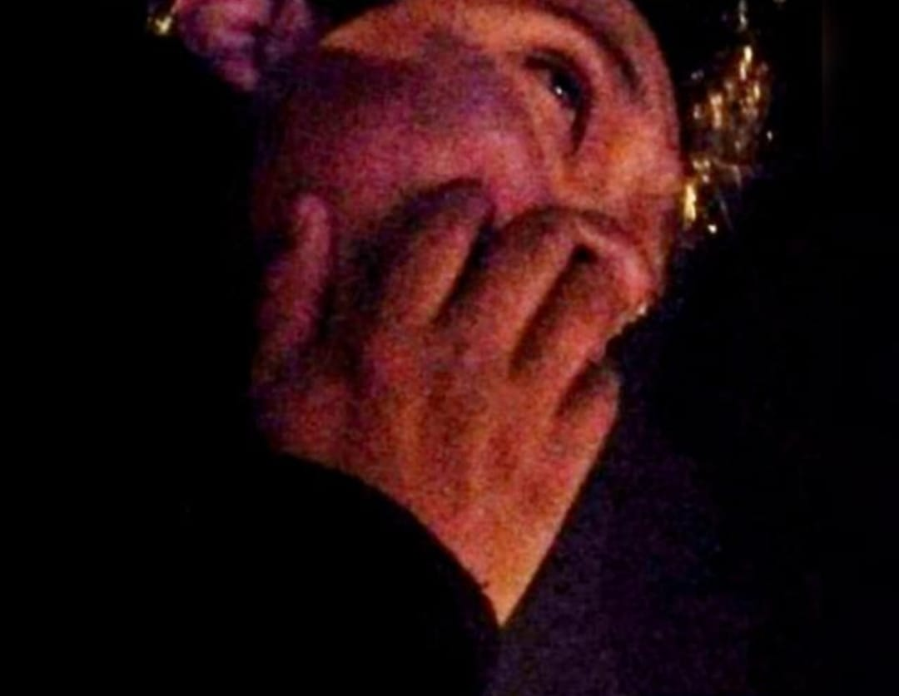

Estudiante de Ingeniería Ambiental de la UAC
CORREO: 020100397G@uandina.edu.pe
Estudiante de Economia de la UAC
CORREO: 019201366c@uandina.edu.pe
Estudiante de Negocios internacionales de la UAC
CORREO: 017200453A@uandina.edu.pe
Naci un 9 de Septiembre de 2002 en la cuidad de Cusco. Escogi la carrera de Ing.Ambiental porque el tema de la contaminacion es algo muy importante que debemos tomar en cuenta hoy en dia y quiero proponer posibles soluciones en nuestra realidad problematica. Me gustan hacer ejercicio, jugar basketball, viodejuegos y escuchar musica pop y electronica
Mi interés principal radica en el análisis económico aplicado al desarrollo de las empresas públicas y privadas,he aprendido la importancia de trabajar con dedicación y mantener una mentalidad abierta para superar desafíos. Además disfruto de las manualidades y reposteria. Tambien, me gusta leer, escuchar música como por ejemplo “forever young” y disfruto pasar tiempo con mi familia y amigos
Soy Dehimon Leo, estoy en la escuela de Administración de Negocios Internacionales porque siempre me llamo la atención el mundo de los negocios y como los países interactuan entre sí atravez del comercio internacional, aparte de ello me gusta los videojuegos, dibujar y escuchar música.
Mas informacion sobre la pagina